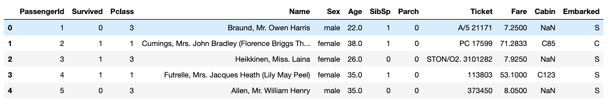

Titanic Survival Prediction
Background story: The skinking of the RMS Titanic is one of the most infamous shipwrecks in history. On April 15, 1912, during her maiden voyage, the Titanic sank after colliding with an iceberg, killing 1502 out of 2224 passengers and crew. One of the reasons that the shipwreck led to such loss of life was that there were not enough lifeboats for the passengers and crew. Although there was some element of luck involved in surviving the sinking, some groups of people were more likely to survive than others, such as women, children, and the upper-class.
In this analysis, I break it down into data cleaning, data visualizations and modeling. I always choose a evaluation metrics before modeling so I can pick the optimal model using that. Since this is a Kaggle competition and the evaluation metrics is Accuracy, I focus on getting the best model with highest accuracy score.
Exploratory Data Analysis
First, let's take a look at the dataset and understand the data types of variables, by doing this, we will know how should we re-encode /transform / visualize our data.

- PassengerID: it's the identifier for passengers, we don't need it when modeling, this column can be dropped
- Survived: this is our response variable, 1 indicates survival and 0 otherwise
- Pclass: Pclass represents ticket class with 1 = 1st, 2 = 2nd and 3 =3rd. It's a ordinal categorical variable
- Name: Passenger name, we can use it for feature engineer later
- Sex: Passenger's gender, its a nominal categorical variable
- Age: continuous numerical variable
- Sibsp: number of siblings/ spouses aboard the Titanic. It's discrete numerical variable
- Parch: number of parents/children aboard the Titanic. same as above
- Ticket: ticket number, we can take a look at this variable and see if it helps with generating new features
- Fare: continous numerical variable
- Cabin: Cabin number;
- Embarked:Port of embarkation (C = Cherbourg, Q = Queenstown, S = Southampton). Not sure if its nominal/ordinal right now, we can tell from EDA